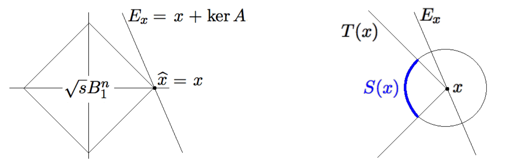
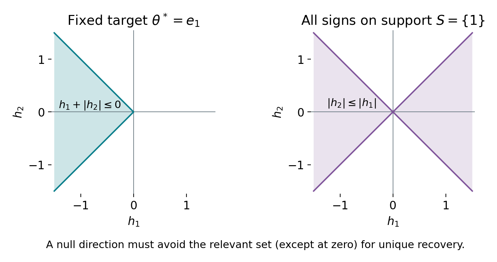
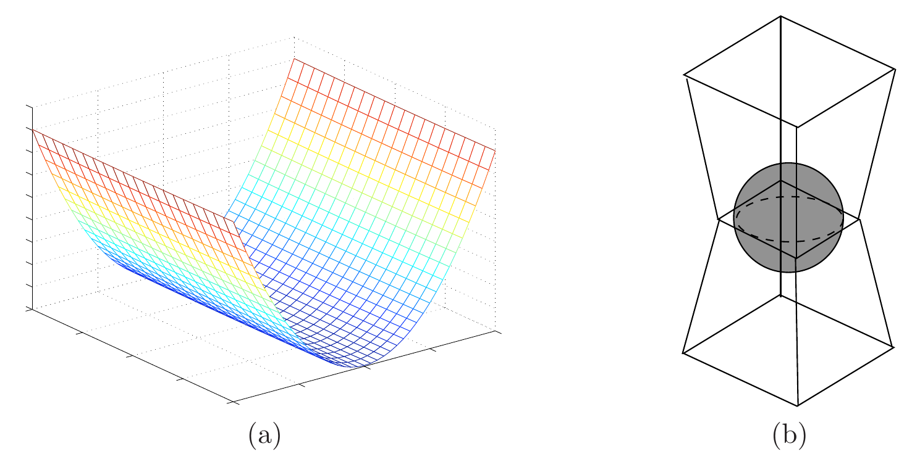

Disclaimer: materials in this pdf are used for STAT 709 “Mathematical Statistics” at the University of Wisconsin–Madison, but they are not guaranteed to be accurate. Consult textbooks whenever possible.
Optional part.
This lecture belongs to optional Part VI and is not examined. Its high, mid and low labels organize a suggested reading path within the optional material; they do not add exam requirements. See the Part VI overview.
Identification. An underdetermined system can identify a sparse signal if its null space avoids the relevant error directions.
Optimization. Basis pursuit makes this geometric idea into a convex optimization problem.
Main route. We compare pairwise incoherence with restricted isometry, then add noise and derive the LASSO error bound from a basic inequality and restricted curvature.
Assumptions. The main route keeps the assumptions and normalization of each guarantee explicit.
Recap from earlier lecturesEarlier ideas used in this lecture · 1 min
These reminders add no exam requirements.
Sparsity. Exact sparsity counts nonzero coordinates; the support records their locations. Used in basis pursuit.
Orthogonal LASSO. The loss normalization and column normalization determine the soft threshold. Used to extend LASSO to general designs.
Linear regression geometry. A null vector changes coefficients without changing fitted values. Used in exact recovery.
Concentration. Tail bounds control averages and can be combined across many events. Used for random-design incoherence.
Learning goals
Interpret basis pursuit using its feasible space and the geometry of the norm ball.
Distinguish target-specific recovery from a uniform support guarantee.
Compare incoherence, restricted isometry and restricted eigenvalues.
Follow the basic inequality that controls LASSO estimation error.
We will explore several topics in statistics that exploit sparsity, spanning the 1990s to the 2000s. The conceptual framework also underlies recent progress in deep neural networks.
1. Basis Pursuit
Basis pursuit (BP) is a precursor of LASSO where we want to recover a sparse solution from an underdetermined linear system of equations. Consider \(y = X\theta\) where \(X \in \R^{n \times p}\) and \(n < p\). We want to find a sparse solution \(\theta\). Suppose that there is a true sparse signal (measured with \(\ell_0\) norm) \(\theta^*\) satisfying \(y = X \theta^*\). Our goal is to recover this vector from measurement data \(X\) and \(y\). BP solves the following convex problem.
\[\begin{aligned} \begin{array}{rl} \min_{\theta \in \R^p} & \|\theta\|_1 \\ \text{subject to} & y = X\theta, \end{array} \end{aligned}\]
(BP)The solution need not be unique: for \(X=(1\ \ 1)\) and \(y=1\), every \((t,1-t)\) with \(0\le t\le1\) minimizes the objective. Uniqueness requires an additional condition. The feasible set (parameters satisfying the linear constraints) is \[\begin{aligned} \theta^* + \text{Ker}(X), \qquad \text{where}~~\text{Ker}(X) = \{\theta: X\theta =0 \} \end{aligned}\] an affine subspace of dimension \(p-\operatorname{rank}(X)\); it is a hyperplane only when \(\operatorname{rank}(X)=1\).
See Exercise 1 in Section 6 for the full statement and complete solution.
1.1. Restricted null space property
We ask the question: What does the solution \(\argmin\{\|\theta\|_1: \theta \in \theta^* + \text{Ker}(X)\}\) look like?

Expand the ball. Let \(B_1(r)=\{\theta:\|\theta\|_1\le r\}\). Increase \(r\) from zero until this ball first intersects the feasible affine subspace.
Optimal value. The first contact radius is the minimum objective value.
Uniqueness. A single contact point gives a unique optimizer; contact along a face gives multiple optimizers.
Convexity. The \(\ell_1\) norm is convex, not strictly convex: the midpoint of two equal-norm points can have the same norm. Thus the number of intersections with a level surface alone does not determine whether the prescribed \(\theta^*\) is recovered.
Blessing of high dimensions.
The \(\ell_1\) ball in \(p\) dimensions, namely \[\begin{aligned} B_1^p(r) = \{\theta\in\mathbb{R}^p: \|\theta\|_1 \le r\} \end{aligned}\] is intuitively very pointy, meaning that the “angle” is very sharp at all corner points. This is in contrast with low dimensions such as 2D. More concretely, consider the simple case \(\theta^* = (1,0,0,\ldots,0)^\top\). BP recovers this sparse signal \(\theta^*\) iff the feasible affine subspace first touches the \(\ell_1\) ball at \(\theta^*\) alone, i.e., \[B_1(\|\theta^*\|_1) \bigcap \big(\theta^* + \text{Ker}(X)\big) = \{ \theta^* \}.\]
Instructor’s NotePointy corners and enough measurements
Keep the geometric picture: the \(\ell_1\) ball has corners on coordinate axes, so a feasible set can touch a sparse point first. Each measurement removes a direction of freedom. Recovery succeeds when the remaining null directions cannot move us away from the sparse corner without increasing the \(\ell_1\) norm.
Recovery criterion. For one Gaussian measurement, \(X=a^\top\in\R^{1\times p}\), and target \(e_1\), basis pursuit recovers \(e_1\) uniquely exactly when \(|a_1|>\max_{j>1}|a_j|\).
Why. Indeed the cheapest representation of \(y=a_1\) uses the column with largest absolute value.
Success probability. The continuous i.i.d. entries are exchangeable, so this success probability is \(1/p\).
Role of more measurements. One measurement leaves too much freedom; the bounds below quantify how additional measurements improve recovery.
RNS: formalizing geometric intuitions.
Denote the support set of the true signal as \(S = \{j \le p: \theta_j^* \neq 0\}\). Define the scale-invariant set (not generally a convex cone) as \[\begin{aligned} C(S) = \{\Delta \in \mathbb{R}^p: \|\Delta_{S^c}\|_1 \le \|\Delta_S\|_1\}, \end{aligned}\] Here \(\Delta_S=(\Delta_j)_{j\in S}\) is the coordinate subvector; thus \(X_S\Delta_S\) has the usual matrix dimensions. We say the design matrix \(X\) satisfies the restricted null space (RNS) property if \[\begin{aligned} \text{Ker}(X) \cap C(S) = \{0\}. \end{aligned}\]
If \(X\) satisfies the RNS property, then BP recovers \(\theta^*\).
Proof. Suppose, for a contradiction, that we can find another \(\theta\) in the feasible set with an \(\ell_1\) norm no larger than that of \(\theta^*\). Then, there exists \(\Delta \neq 0\), such that \[\begin{aligned} X\Delta = 0,\quad \|\theta^*+\Delta\|_1\le\|\theta^*\|_1. \end{aligned}\] By our definition, \(\|u\|_1 = \|u_S\|_1 + \|u_{S^c}\|_1\) for any vector \(u\), so \[\begin{aligned} \|\theta^* + \Delta\|_1 &= \|\theta^*_S + \Delta_S\|_1 + \|\Delta_{S^c}\|_1 \qquad \text{(since $\theta^*_{S^c} = 0$ by definition)}\\ &\ge \|\theta_S^*\|_1 - \|\Delta_S\|_1 + \|\Delta_{S^c}\|_1 \qquad \text{(by triangle inequality)}\\ &> \|\theta_S^*\|_1 \qquad \text{(by RNS property)}\\ &= \|\theta^*\|_1, \end{aligned}\] which leads to a contradiction! ◻
Descent directions. From an optimization perspective, \(C(S)\) contains all displacements that can avoid increasing \(\|\theta^*\|_1\), but it can be larger than the descent cone for a fixed sign pattern.
Uniform recovery. RNS is a sufficient condition for this target and characterizes uniform recovery over every vector supported on \(S\).
Target-specific criterion. For a fixed target, unique recovery means no nonzero feasible displacement has a nonincreasing objective.
Restricted null space.
If no nonzero null vector satisfies \(\|h_{S^c}\|_1\le\|h_S\|_1\), then a signal supported on \(S\) is the unique basis-pursuit solution. This is a restricted condition, not full column rank.
For a concrete comparison, take \(\theta^*=e_1\in\R^2\). For sufficiently small \(t>0\), \[\|e_1+th\|_1=1+t(h_1+|h_2|).\] Thus the fixed-sign descent cone is \(h_1+|h_2|\le0\). Allowing either sign of the signal produces the larger set \(|h_2|\le|h_1|\) used in RNS.

1.2. Pairwise incoherence: a key condition on design matrix
The RNS property looks a bit abstract. So we want to understand what kind of \(X\) satisfies this property.
Let \(X = (X_1, \ldots, X_p) \in \mathbb{R}^{n\times p}\). The pairwise incoherence (PI) is \[\begin{aligned} \delta_{\mathrm{pw}}(X) = \left\|\frac{1}{n}X^\top X - I_p\right\|_{\max} = \max_{k, j \le p}\left|\frac{1}{n}\langle X_k, X_j\rangle - \mathbb{1}(k = j)\right|. \end{aligned}\]
Entrywise error. For every \(n,p\), this measures the largest entrywise error in \(X^\top X/n\) from \(I_p\).
Column normalization. It controls column-length errors as well as correlations; when all columns have norm \(\sqrt n\), only the off-diagonal correlations remain.
Many columns. A remarkable fact is that we can have a small \(\delta_{pw}(X)\) even when \(p \gg n\).
Suppose \(X\in\R^{n\times p}\) has i.i.d. \(N(0,1)\) entries, with \(p\ge2\). For \(0<\alpha<1\), let \(u=\log(2p^2/\alpha)\). With probability at least \(1-\alpha\), \[\delta_{\rm pw}(X)\le C\left(\sqrt{u/n}+u/n\right).\] When \(u\le n\), this reduces to a constant times \(\sqrt{u/n}\).
Even exponentially many columns can have small normalized pairwise inner products, provided their exponential growth rate is sufficiently small relative to the requested incoherence tolerance. The diagonal terms also control their lengths.
Proof. For fixed \(j,k\), the centered products \(X_{ij}X_{ik}-I\{j=k\}\) are independent across rows, with uniformly bounded subexponential norm. Bernstein gives \[\PR\left(\left|n^{-1}\langle X_j,X_k\rangle-I\{j=k\}\right|>t\right)\le2e^{-cn\min(t^2,t)}.\] A union bound over \(p^2\) ordered pairs yields \[\PR(\delta_{\rm pw}(X)>t)\le2p^2e^{-cn\min(t^2,t)}.\] Choosing \(t=C(\sqrt{u/n}+u/n)\) with a sufficiently large absolute constant makes the right side at most \(\alpha\). The linear term accounts for very small failure probabilities or large \(\log p/n\). ◻
If \(X\) has pairwise incoherence \(\delta_{pw}(X) < \frac{1}{2k}\), and \(|S| \le k\), then \(X\) satisfies RNS property.
A short coordinate proof is in Exercise 5; the later low-priority proof gives a complementary matrix argument.
By combining the above deterministic result with Proposition 2, we get the following recovery guarantee.
Assume \(X_{kj}\stackrel{\iid}{\sim}\mathcal{N}(0, 1)\) with \(p\ge2\) and \(1\le k\le p\). Then BP recovers every \(k\)-sparse \(\theta^*\) simultaneously with probability at least \(1-p^{-2}\) if \[\begin{aligned} n \ge Ck^2\log p. \end{aligned}\] where \(C\) is an absolute constant.
The remarkable aspect of the corollary is that we can recover \(\theta^*\) even \(p \gg n\), namely \(X\theta^* = y\) highly under-determined due to the blessing of high dimensions. However, it turns out that the requirement \(n \gg k^2\)—also known as the sample complexity—is still suboptimal because pairwise incoherence is not the “right” notion. We need to view \(X\) holistically (as an operator)!
See Exercise 2 in Section 6 for the full statement and complete solution.
1.3. Proof of Theorem 1
Low priority—not examined: Proof of Theorem 1
The proof relies on a simple matrix norm bound. Fact: For a symmetric \(A \in \mathbb{R}^{d\times d}\), \(\|A\|_{\mathrm{op}} \le d\|A\|_{\max}\).
Proof. Proof of the fact.
Recall \(\|A\|_{\mathrm{op}} = \max_{u: \|u\|_2 = 1}\|Au\|_2\). Let \(A_i\) be the \(i\)-th column of \(A\). By the Cauchy-Schwarz inequality, for any vector \(u\), \[\begin{aligned} \|Au\|_2^2 = \sum_{i=1}^{d} \langle A_i, u\rangle^2 &\le \sum_{i=1}^{d} \|A_i\|_2^2\|u\|_2^2 = \|A\|_F^2 \|u\|^2 \le d^2\|A\|_{\max}^2 \|u\|^2. \end{aligned}\] So maximizing over \(u\) yields \(\|A\|_{\mathrm{op}} \le d\|A\|_{\max}\). ◻
Proof. Proof of Theorem 1.
We take any nonzero \(\Delta \in \text{Ker}(X)\), i.e., \(X\Delta = 0\), \(\Delta \neq 0\). We partition \(X\) such that \[\begin{aligned} X = [\underset{n\times |S|}{X_S}, \underset{n\times (p - |S|)}{X_{S^c}}], \quad X\Delta = X_S\Delta_S + X_{S^c}\Delta_{S^c}, \end{aligned}\] so we have\[\begin{aligned} X_S\Delta_S = -X_{S^c}\Delta_{S^c} \quad \Longrightarrow \quad X_S^\top X_S\Delta_S = -X_S^\top X_{S^c}\Delta_{S^c}. \end{aligned}\] From the assumption, we have
\(\lambda_{\min}(\frac{1}{n}X_S^\top X_S) > 1/2\),
\(\|\frac{1}{n}X_S^\top X_{S^c}\|_{\max} < \frac{1}{2k}\),
since \[\begin{aligned} &\left\|\frac{1}{n}X_S^\top X_S - I_{S\times S}\right\|_{\mathrm{op}} \le |S| \left\|\frac{1}{n}X_S^\top X_S - I_{S\times S}\right\|_{\max} \le k \delta_{\mathrm{pw}}(X),\\ &\left\|\frac{1}{n}X_S^\top X_{S^c}\right\|_{\max} \le \left\|\frac{1}{n}X^\top X - I_{p\times p}\right\|_{\max} \le \delta_{\mathrm{pw}}(X). \end{aligned}\] Thus, we have \[\begin{aligned} \Delta_S = -(\frac{1}{n}X_S^\top X_S)^{-1}\left(\frac1nX_S^\top X_{S^c}\right)\Delta_{S^c}. \end{aligned}\] So, \[\begin{aligned} \|\Delta_S\|_1 &\le \sqrt{|S|} \|\Delta_S\|_2 \qquad \text{(by Cauchy-Schwarz inequality.)}\\ &\le \frac{\sqrt{|S|}}{\sigma_{\min}\left(\frac{1}{n}X_S^\top X_S\right)}\left\|\frac{1}{n}X_S^\top X_{S^c}\Delta_{S^c}\right\|_2\\ &\le \frac{|S|}{\sigma_{\min}\left(\frac{1}{n}X_S^\top X_S\right)}\left\|\frac{1}{n}X_S^\top X_{S^c}\Delta_{S^c}\right\|_\infty\\ &\le \frac{|S|}{\sigma_{\min}\left(\frac{1}{n}X_S^\top X_S\right)}\left\|\frac1nX_S^\top X_{S^c}\right\|_{\max}\|\Delta_{S^c}\|_1 \qquad \text{(by } |\langle u, v\rangle| \le \|u\|_\infty \|v\|_1.)\\ &< 2k \frac{1}{2k} \|\Delta_{S^c}\|_1 \\ &= \|\Delta_{S^c}\|_1. \end{aligned}\] So, we conclude that \(\Delta \notin C(S)\) and BP recovers \(\theta^*\). ◻
2. Compressed Sensing
If no nonzero null vector satisfies \(\|h_{S^c}\|_1\le\|h_S\|_1\), then a signal supported on \(S\) is the unique basis-pursuit solution. This is a restricted condition, not full column rank.
Restricted isometry constant \(\delta_k\) of \(X\) is the smallest nonnegative number such that \[\begin{aligned} (1 - \delta_k)\|u\|_2^2 \le \|Xu\|_2^2 \le (1 + \delta_k)\|u\|_2^2, \end{aligned}\] holds for all \(k\)-sparse \(u \in \mathbb{R}^p\).
Sparse isometry. If \(\delta_k = 0\), \(\|Xu\| = \|u\|\), for every \(k\)-sparse \(u\); this is an isometry on each coordinate subspace of dimension at most \(k\).
Scope. It does not imply global isometry unless \(k=p\).
Pairwise comparison. In particular, unit-length columns already give \(\delta_1=0\), even if two columns coincide. The above definition focuses on all \(k\)-sparse vectors and relaxes isometry to allow a tolerance \(\delta_k\).
We use \(X\) itself in the RIP definition below. For an unscaled Gaussian design, apply RIP to \(X/\sqrt n\) and rescale \(y\) by the same factor; the BP feasible set is unchanged.
Assume \(y=X\theta^*\).
Suppose \(\theta^*\) is \(k\)-sparse and \(\delta_{2k} < 1\). Then \(\theta^*\) is unique solution to \[\begin{aligned} \min_{\theta\in\mathbb{R}^p}\|\theta\|_0, \qquad \text{s.t. }X\theta = y. \end{aligned}\]
Suppose \(\theta^*\) is \(k\)-sparse and \(\delta_{2k} < \sqrt{2} - 1\). Then \(\theta^*\) is unique solution to \[\begin{aligned} \min_{\theta\in\mathbb{R}^p}\|\theta\|_1, \qquad\text{s.t. }X\theta = y. \end{aligned}\]
NP-hard is a worst-case complexity classification: a polynomial-time algorithm for every instance would also solve a broad class of combinatorial search problems efficiently. It does not say that every dataset is difficult; the structural assumptions in this lecture identify cases where a convex method succeeds.
Recall \(\|\theta\|_0 = \sum_{j=1}^{p}\mathbb{1}(\theta_j \neq 0)\). The count \(\|\theta\|_0\) is nonconvex. Finding the sparsest solution is NP-hard in general1; nonconvexity alone is not a proof of computational hardness.
Basis pursuit is a linear program and has polynomial-time algorithms in the usual finite-precision model. Exercise 8 gives the reformulation.
Let \(0<\delta<1\), \(1\le k\le p\), and \(X_{ij}\stackrel{\iid}{\sim}\mathcal N(0,1)\). With probability at least \(1-2\exp(-c\delta^2 n)\), the normalized matrix \(X/\sqrt n\) has restricted isometry constant at most \(\delta\), provided \[n\ge C\delta^{-2}k\log(ep/k).\] Here \(c,C>0\) are absolute constants. A net argument over all \(k\)-coordinate subspaces proves this result; see [1] (Section 10.5).
The recovery implication in part (2) is proved in Candès (2008). Finally, we have a tight sample complexity bound in terms of both sparsity \(k\) and dimension \(p\).
See Exercise 3 in Section 6 for the full statement and complete solution.
2.1. Algorithmic perspective*
Low priority—not examined: Algorithmic perspective
Convexity is useful because every local minimizer is global. For basis pursuit, the linear-program formulation gives a concrete algorithmic guarantee, with the computational cost depending on dimension, encoding length and requested accuracy.
For sparsest recovery, searching over supports is a useful mental picture of the difficulty. In the problem \[\begin{aligned} \min\|\theta\|_0,\qquad \text{ s.t. }X\theta = y, \end{aligned}\] a direct approach searches over candidate supports \(S\). If \(|S| = k\), we need to consider \(\binom{p}{k}\) possible choices of \(S\), which is bad if \(p\) and \(k\) are large. It is connected to the NP-hardness in the complexity theory.
Convex relaxation
generally refers to solving a convex surrogate problem. For example, BP replaces \(\|\theta\|_0\) with \(\|\theta\|_1\). A takeaway from convex relaxation is that, in suitable statistical settings, solving a convex problem is the same as a nonconvex one with high probability.
3. Statistical theory for LASSO
So far, we have studied two problems related to LASSO.
Orthogonal design: LASSO = coordinate-wise shrinkage.
Noiseless data: as the positive penalty tends to zero, LASSO approaches basis-pursuit solutions.
In this section, we provide a theoretical analysis of the general LASSO. Assume the linear model \(y = X \theta^* + \veps\) where \(\theta^*\) is \(k\)-sparse, we solve the convex optimization problem
\[\begin{aligned} \min_{\theta\in\mathbb{R}^p} \underbrace{\frac{1}{2n}\|y - X\theta\|_2^2}_{L_n(\theta)} + \underbrace{\lambda_n\|\theta\|_1}_{p_n(\theta)} =: \ell_n(\theta). \end{aligned}\]
(1)Write \(\lambda=\lambda_n\) in the following arguments. The solution is not necessarily unique. LASSO generalizes denoising and BP in two ways.
We use the \(\ell_1\) norm with a regularization parameter \(\lambda_n\) to encourage sparse solutions and reduce noise. In comparison, when \(p>n\), ordinary least squares has no unique coefficient solution, and a minimum-norm choice does not by itself exploit coordinate sparsity.
Instead of the linear constraint in BP, we use a quadratic loss \(L_n(\theta)\) to accommodate noisy measurements.
Why the noiseless limit is basis pursuit.
Compare objectives. Let \(\theta_{\rm BP}\) be any basis-pursuit minimizer for feasible data \(y\). For \(\lambda>0\), comparison with that exact fit gives \[\frac{\|y-X\hat\theta_\lambda\|^2}{2n}+\lambda\|\hat\theta_\lambda\|_1 \le\lambda\|\theta_{\rm BP}\|_1.\]
Boundedness and fit. Consequently \(\|\hat\theta_\lambda\|_1\le\|\theta_{\rm BP}\|_1\) and the residual tends to zero as \(\lambda\downarrow0\).
Limits solve BP. The bounded estimates have convergent subsequences; every subsequential limit is feasible and has minimum \(\ell_1\) norm. If BP is unique, the whole family converges to it.
Positive penalty. For a fixed positive \(\lambda\), LASSO generally need not interpolate exactly.
The basic LASSO inequality.
Optimality compares the fitted objective with the objective at the true signal. A noise bound then puts the error in a cone, where restricted curvature can control its Euclidean norm.
3.1. Geometric intuition
Due to the noise \(\veps\) and a continuous parameter space \(\R^p\), we can’t expect the solution \(\hat \theta\) to LASSO to be exactly \(\theta^*\), so we want to have guarantees on the estimation error \(\| \hat \theta - \theta^* \|_2\).
Difficulty.
Note that the quadratic loss in (1) is strongly convex if and only if \(X\) has full column rank. If \(p < n\), we have seen in earlier lectures that \(X^\top X\) is a key quantity in the Fisher information of the linear model. However, if \(p > n\), the Hessian \(\nabla_\theta^2 L_n(\theta) = X^\top X/n \in \mathbb{R}^{p\times p}\) must be degenerate because
\[\begin{aligned} \text{rank}(\nabla_\theta^2 L_n(\theta))\le n < p. \end{aligned}\]
(2)We have seen that this singularity is the root of many issues such as non-identifiability, numerical instability, singular Fisher information, etc.

Key insights.
Our strategy is to show that the Hessian is non-degenerate when restricted to the allowed error directions in \(C_3(S)\subset\R^p\) (defined below) instead of the entire space \(\R^p\). Sparsity restricts the error directions, so we do not need curvature along every vector in \(\R^p\).
Error coordinates. As before, let the support set be \(S := \mathrm{supp}(\theta^*) = \{j \le p: \theta^*_j \neq 0\}\), and denote \(\Delta = \theta - \theta^*\).
Compare objectives. The question is when \(\ell_n(\theta^*+\Delta) \le \ell_n(\theta^*)\)?
Include both terms. The full objective, not its penalty alone, determines a descent direction.
Allowed error set. The basic inequality shows that a minimizing error lies in the enlarged set \(C_3(S)\) when \(\lambda\) dominates the noise correlation. Restricted curvature is required on that set.
Instructor’s NoteOnly the relevant directions need curvature
A flat valley is a problem only if an estimation error can travel along it. Sparsity and the penalty constrain the possible error directions. Restricted curvature asks the loss to resist motion along those directions, even though it may remain flat elsewhere.
3.2. Estimation Error of LASSO
Optimality compares the fitted objective with the objective at the true signal. A noise bound then puts the error in a cone, where restricted curvature can control its Euclidean norm.
We need to slightly modify the cone of descent directions from BP. Denote \[C_r(S) = \{\Delta\in\mathbb{R}^p: \|\Delta_{S^c}\|_1 \le r\|\Delta_S\|_1\}.\]
We say \(X\) satisfies restricted eigenvalue (RE) condition over \(S\) with parameter \(\kappa>0\) if \[\begin{aligned} \frac{1}{n}\|X\Delta\|_2^2 \ge \kappa \|\Delta\|_2^2, \qquad \text{for any}~ \Delta\in C_3(S). \end{aligned}\]
This is the restricted-curvature convention of [2] (Definition 7.12): \(\kappa\) bounds the normalized quadratic form itself, rather than its square root. We state a deterministic result assuming the RE condition.
Assume that \(X\) satisfies \(\kappa\)-restricted eigenvalue condition, and \[\begin{aligned} \lambda>0,\qquad\lambda\ge2\left\|\frac{X^\text{T}\veps}{n}\right\|_\infty. \end{aligned}\] Denote any LASSO solution by \(\hat{\theta}\) and \(\Delta = \hat{\theta} - \theta^*\). Then
\(\Delta \in C_3(S)\).
\(\|\Delta\|_2 \le \frac{3\lambda\sqrt{|S|}}{\kappa}\).
Proof route. The complete argument is in Exercise 6; the optional proof subsection expands the same steps.
Condition on the design. For independent Gaussian noise \(\veps\sim N(0,\sigma^2I_n)\), conditional on a fixed design with \(\max_j\|X_j\|_2\le L\sqrt n\), a Gaussian tail and union bound give \[\PR\left(\left\|X^\top\veps/n\right\|_\infty>\sigma L\sqrt{2\log(2p/\alpha)/n}\ \middle|\ X\right)\le\alpha.\]
Penalty scale. Choose \(\lambda\) twice this radius.
Random-design guarantee. For an independent isotropic Gaussian design, restricted-eigenvalue theory gives a constant lower bound on \(\kappa\) with high probability once \(n\ge Ck\log(ep/k)\), and the column bound holds in the corresponding sample regime. Therefore \[\|\hat\theta-\theta^*\|_2\le C\sigma\sqrt{k\log(2p/\alpha)/n}\] on the joint good event. Independence, noise scale and sample size are part of the guarantee; Gaussian design alone is not enough.
Error requires scale and curvature.
The LASSO error bound is proportional to \(\lambda\sqrt{|S|}/\kappa\). The tuning parameter must dominate the noise correlation, and the restricted-eigenvalue constant must be positive.
See Exercise 4 in Section 6 for the full statement and complete solution.
3.3. Proof of Theorem 4
Low priority—not examined: Proof of Theorem 4
Proof. Proof of Theorem 4.
\[\begin{aligned} \ell_n(\hat{\theta}) \le \ell_n(\theta^*) &\Leftrightarrow \frac{1}{2n} \|X\Delta - \veps\|_2^2 + \lambda \|\theta^* + \Delta\|_1 \le \frac{1}{2n}\|\veps\|_2^2 + \lambda\|\theta^*\|_1 \\ &\Leftrightarrow \frac{1}{2n} \|X\Delta\|_2^2 \le \frac{1}{n}\langle X\Delta, \veps\rangle + \lambda \|\theta^*\|_1 - \lambda \|\theta^* + \Delta\|_1 \end{aligned}\] By definition, \(\theta^*_{S^c} = 0\), so \(\|\theta^*\|_1=\|\theta^*_S\|_1\). Using triangle inequality, and that \[\begin{aligned} |\langle X\Delta, \veps\rangle| = |\langle\Delta, X^\text{T}\veps\rangle| \le \|X^\text{T}\veps\|_\infty \|\Delta\|_1, \end{aligned}\] we have
\[\begin{aligned} \frac{1}{2n}\|X\Delta\|_2^2 \le \frac{1}{n}\|X^\text{T}\veps\|_\infty\|\Delta\|_1 - \lambda\|\Delta_{S^c}\|_1 + \lambda\|\Delta_S\|_1. \end{aligned}\]
(3)Without using restricted eigenvalue condition, \[\begin{aligned} 0 \le \frac{1}{2n}\|X\Delta\|_2^2 \le \frac{\lambda}{2}\|\Delta\|_1 - \lambda \|\Delta_{S^c}\|_1 + \lambda\|\Delta_S\|_1, \end{aligned}\] which implies that \[\begin{aligned} 0 \le \frac{1}{2}(\|\Delta_S\|_1 + \|\Delta_{S^c}\|_1) - \|\Delta_{S^c}\|_1 + \|\Delta_S\|_1, \end{aligned}\] thus \[\begin{aligned} \|\Delta_{S^c}\|_1 \le 3\|\Delta_S\|_1. \end{aligned}\]
In Equation (3), use \[\begin{aligned} \frac{1}{2n}\|X\Delta\|_2^2 \ge \frac{\kappa}{2}\|\Delta\|^2, \end{aligned}\] by \(\kappa\)-restricted eigenvalues, \[\begin{aligned} &\frac{\kappa}{2}\|\Delta\|^2 \le \frac{\lambda}{2}\|\Delta\|_1 - \lambda \|\Delta_{S^c}\|_1 + \lambda\|\Delta_S\|_1 \le \frac{3\lambda }{2}\|\Delta_S\|_1\\ \Rightarrow&\kappa\|\Delta\|_2^2 \le 3\lambda \|\Delta_S\|_1 \le 3\lambda\sqrt{|S|}\|\Delta_S\|_2 \le 3\lambda\sqrt{|S|}\|\Delta\|_2\\ \Rightarrow& \|\Delta\|_2 \le \frac{3\lambda\sqrt{|S|}}{\kappa}. \end{aligned}\]
◻
4. Further reading
Further reading: Further reading
The main reference for sparse linear regression is [2]. For the geometric recovery viewpoint, see Vershynin, Section 10.5. For restricted curvature and regularized estimation, see Negahban et al., Sections 2–4.
Key ideas
Exact sparse recovery requires the null space to avoid directions that do not increase the norm.
Pairwise incoherence gives a convenient sufficient condition; restricted isometry can use fewer measurements.
For noisy LASSO, the penalty constrains the error directions and restricted curvature bounds their length.
The tuning parameter must be calibrated to the noise correlations under the stated design normalization.
Detailed reference
Detailed reference
If no nonzero null vector satisfies \(\|h_{S^c}\|_1\le\|h_S\|_1\), then a signal supported on \(S\) is the unique basis-pursuit solution. This is a restricted condition, not full column rank. See the source checkpoint.
Optimality compares the fitted objective with the objective at the true signal. A noise bound then puts the error in a cone, where restricted curvature can control its Euclidean norm. See the source checkpoint.
The LASSO error bound is proportional to \(\lambda\sqrt{|S|}/\kappa\). The tuning parameter must dominate the noise correlation, and the restricted-eigenvalue constant must be positive. See the source checkpoint.
Looking ahead
This completes the optional shrinkage and sparsity sequence. The planned Part VII: Testing and confidence sets turns from estimation to decisions and uncertainty; its lecture materials are not yet available.
Exercises and complete solutions8 exercises · complete solutions
For \(X=(1\ \ 2)\) and \(y=2\), find the unique basis-pursuit solution.
Reveal solution
The constraint is \(b_1+2b_2=2\). Since \(2=|b_1+2b_2|\le|b_1|+2|b_2|\le2(|b_1|+|b_2|)\), the objective is at least 1. Equality in the second inequality forces \(b_1=0\), then the constraint gives \(b_2=1\). Thus \((0,1)\) is the unique minimizer.
If \(\delta_{\rm pw}(X)=0.04\), what positive integer sparsity levels are certified by \(\delta_{\rm pw}<1/(2k)\)?
Reveal solution
The inequality is \(0.08k<1\), or \(k<12.5\). Hence every integer \(k\) from 1 through 12 is certified. The condition is sufficient: lack of this certificate for \(k=13\) does not prove recovery fails.
Prove that \(\delta_{2k}<1\) rules out two distinct \(k\)-sparse vectors with the same measurements.
Reveal solution
If \(Xu=Xv\) and \(u,v\) are \(k\)-sparse, then \(h=u-v\) has support size at most \(2k\). RIP gives \(0=\|Xh\|^2\ge(1-\delta_{2k})\|h\|^2\), so \(h=0\). Any solution of the sparsest-representation problem has support size no larger than the true \(k\)-sparse target, proving its uniqueness.
If \(|S|=4\), \(\kappa=0.5\), \(\lambda=0.1\), and the noise correlation is at most 0.04, what error bound does the theorem provide?
Reveal solution
We have \(0.1\ge2(0.04)\), so the penalty condition holds. The Euclidean bound is \(3(0.1)\sqrt4/0.5=1.2\). It is an upper guarantee, not a claim that the actual error equals 1.2.
Prove RNS for \(|S|\le k\) when \(\delta=\|X^\top X/n-I\|_{\max}<1/(2k)\) using a coordinate argument.
Reveal solution
Let \(G=X^\top X/n\) and \(Xh=0\). Then \(h=(I-G)h\), giving \(|h_j|\le\delta\|h\|_1\) for every \(j\). Thus \(\|h_S\|_1\le k\delta(\|h_S\|_1+\|h_{S^c}\|_1)\), or \(\|h_S\|_1\le[k\delta/(1-k\delta)]\|h_{S^c}\|_1\). The factor is strictly less than one. If the outside norm were zero, the same inequality would force \(h=0\). Every nonzero null vector therefore lies outside \(C(S)\).
Under the assumptions of Theorem 4, prove both the cone inclusion and the Euclidean error bound.
Reveal solution
Optimality and expansion of squared loss give \[\frac{\|X\Delta\|^2}{2n}\le\frac{\veps^\top X\Delta}{n}+\lambda(\|\theta^*\|_1-\|\theta^*+\Delta\|_1).\] The noise bound and triangle inequality give at most \(\tfrac{3\lambda}{2}\|\Delta_S\|_1-\tfrac\lambda2\|\Delta_{S^c}\|_1\). Since the left side is nonnegative, \(\|\Delta_{S^c}\|_1\le3\|\Delta_S\|_1\). Apply RE to obtain \(\kappa\|\Delta\|_2^2\le3\lambda\|\Delta_S\|_1\le3\lambda\sqrt{|S|}\|\Delta\|_2\). The zero-error case is immediate; otherwise divide by its norm.
Derive the displayed conditional Gaussian noise-correlation bound when \(\|X_j\|\le L\sqrt n\).
Reveal solution
Conditional on \(X\), each \(X_j^\top\veps/n\) is mean-zero Gaussian with variance at most \(\sigma^2L^2/n\). A union bound gives \(2p\exp[-nt^2/(2\sigma^2L^2)]\) for the maximum exceeding \(t\); independence between coordinates is not required. Insert \(t=\sigma L\sqrt{2\log(2p/\alpha)/n}\).
Express BP using variables \(u,v\ge0\) with \(\theta=u-v\), and justify equivalence.
Reveal solution
Minimize \(\sum_j(u_j+v_j)\) subject to \(X(u-v)=y\) and nonnegative \(u,v\). Every \(\theta\) has a feasible representation by its positive and negative parts with objective \(\|\theta\|_1\). Conversely every such representation has objective at least \(\|u-v\|_1\). Hence the two optimal values and recovered \(\theta\) minimizers agree. This explains convex computational tractability without implying uniqueness.
References
Terminology notes
NP-hard is a worst-case complexity classification: a polynomial-time algorithm for every instance would also solve a broad class of combinatorial search problems efficiently. It does not say that every dataset is difficult; the structural assumptions in this lecture identify cases where a convex method succeeds.↩︎
What changed
October 16, 2026: Clarified the basis-pursuit limit of LASSO, used the enlarged error set consistently, and separated computational hardness from nonconvexity alone. Added optional-part guidance, a backward recap and concise reading summaries. October 17, 2026: Published in optional Part VI with lecture links, student downloads and issue reporting; this material is not examined.
Comments
Discuss an idea or ask a public question. Include a section or exercise number when relevant. For errors in the notes or website, Report an issue.
Public comments use Disqus. Enable JavaScript to load them.
Email the instructor for a private question or if comments are unavailable.